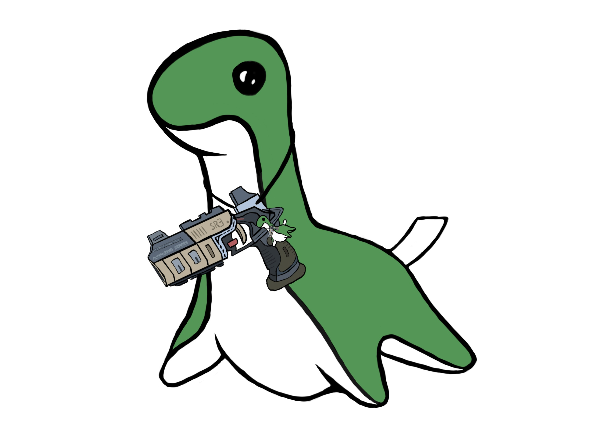

内外边距
李清照故居
辅助类
碌的工作和舒适生活的结合。孟州市是河南省的一个县级市，拥有丰富的历史和文化遗产，包括十三朝古都洛阳的遗址和康熙故居等。除此之外，孟州市还有其它吸引人的地方，如山水园林、风景名胜、商业区等。同时，孟州市的产业也分发达，主要包括制造业、农业和服务业等，让人们可以享受到全面发展和丰富多彩的生活。因此，孟州市是一个很好的选择来实现工作与生活的平衡。
列表
| 编号 |
名称 |
类型 |
| 1001 |
肖生克的救赎 |
犯罪 |
| 1002 |
当幸福来敲门 |
励志 |
文本相关
洛阳是中华文明的发源地之一，有着悠久的历史和化底蕴。同时，洛阳也是一个经济发达的城市，享有"中原工业重镇"的美誉。它不仅有优美的自然风光，还有许多著名的人文景观，如龙门石窟、洛阳白马寺、洛阳国家森林公园等等。此外，洛阳还是一个教育城市，有着高水平的大学和科研机构。
图片相关

按钮
黄色
绿色
青色
浅色
深色
红色
蓝色
灰色
按钮
按钮
按钮